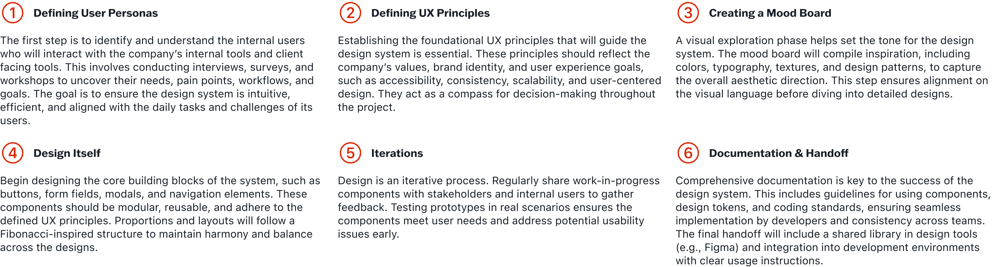

The Goal & Mission

The Challenge
As teams grow and products evolve, inconsistencies start creeping in, colors don’t match, buttons behave differently, and accessibility often feels like an afterthought. It becomes harder to keep everyone on the same page, leading to a fragmented user experience that doesn’t reflect the brand or meet user expectations.
I spend too much time reinventing the wheel, developers face duplicate effort building the same components, and the whole process feels slower and less efficient. On top of that, scaling without a clear structure makes it nearly impossible to innovate quickly or maintain quality across the board.
The Approach
To solve this, we set out to create a design system that acts as a single source of truth for everyone - designers, developers, and stakeholders. It’s more than just a library of components; it’s a shared language that brings clarity and consistency to everything we build.
Drawing inspiration from the Fibonacci sequence, we’ve applied its natural proportions to layouts, spacing, and visual hierarchy, giving the design a sense of balance and flow that feels intuitive to users. We’ve baked accessibility into every part of the system, so inclusivity isn’t an afterthought.
By collaborating across teams and building with scalability in mind, the system not only helps us move faster but also ensures every product feels connected, polished, and ready to meet users’ needs.
Scope & Process
Creating a scalable design system from scratch took six key steps, each thoughtfully planned to deliver great results and maintain top-notch quality.
